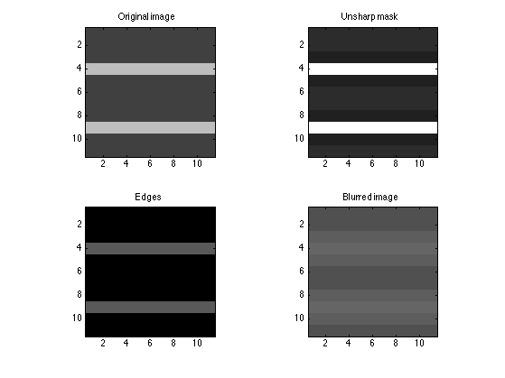
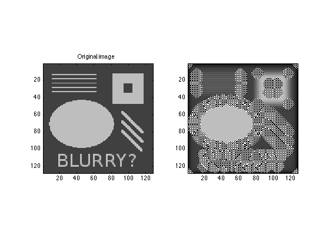

Contents
Problem 4: Image processing and the "unsharp mask"
close all;clear; %img_name = 'testpat_noblur.png'; img_name = 'eye.png'; [u, ublur] = blurImg(img_name, 10, 0.1); uedges = u - ublur; usharp = u + uedges; figure; subplot(1,2,1);imagesc(u);title('Original image'); caxis([0 1]);colormap(gray);axis equal, axis tight; subplot(1,2,2);imagesc(usharp);title('Unsharp mask'); caxis([0 1]);colormap(gray);axis equal, axis tight;

Zoom in to see the effect on the edges
As explained in the tutorial provided, bright zones are made brighter whereas dark zones are made darker.
close all;clear; img_name = 'testpat_noblur.png'; idx = 20:30; [u, ublur] = blurImg(img_name, 10, 0.1); uedges = u - ublur; usharp = u + uedges; figure; title('Zoom-in testpat_noblur.png to appreaciate distorsion in the edges'); subplot(2,2, 1);imagesc(u(idx, idx));title('Original image'); caxis([0 1]);colormap(gray);axis equal, axis tight; subplot(2,2,2);imagesc(usharp(idx, idx));title('Unsharp mask'); caxis([0 1]);colormap(gray);axis equal, axis tight; subplot(2,2, 3);imagesc(uedges(idx, idx));title('Edges'); caxis([0 1]);colormap(gray);axis equal, axis tight; subplot(2,2, 4);imagesc(ublur(idx, idx));title('Blurred image'); caxis([0 1]);colormap(gray);axis equal, axis tight;
Zoom in to check the effect of the time steps
steps = [5, 10 , 20]; figure; title('Effect of different time steps'); subplot(4,1, 1);imagesc(u(idx, idx));title('Original image'); caxis([0 1]);colormap(gray);axis equal, axis tight; for it = 1:length(steps) [u, ublur] = blurImg(img_name, steps(it), 0.1); uedges = u - ublur; usharp = u + uedges; subplot(4,2, 3 + 2*(it-1));imagesc(usharp(idx, idx)); title(sprintf('Unsharp mask. %d blurring steps', steps(it))); caxis([0 1]);colormap(gray);axis equal, axis tight; subplot(4,2, 4 + 2*(it-1));imagesc(ublur(idx, idx)); title(sprintf('Blurred image. %d blurring steps', steps(it))); caxis([0 1]);colormap(gray);axis equal, axis tight; end

Increasing the time step
Changing the dt to 0.5 we observe that the values of ublur do not lie within the [0, 1] limit any more. This is due to the conditional stability of the explicit scheme
img_name = 'testpat_noblur.png'; [u, ublur] = blurImg(img_name, 10, 0.5); figure; subplot(1,2,1);imagesc(u);title('Original image'); caxis([0 1]);colormap(gray);axis equal, axis tight; subplot(1,2,2);imagesc(ublur);title(''); caxis([0 1]);colormap(gray);axis equal, axis tight;
Maximum and minimum values of the original image
max(max(u)), min(min(u))
ans = 0.749019607843137 ans = 0.250980392156863
Maximum and minimum values of the original image
max(max(ublur)), min(min(ublur))
ans =
2.879130675551471e+03
ans =
-2.849341674325981e+03